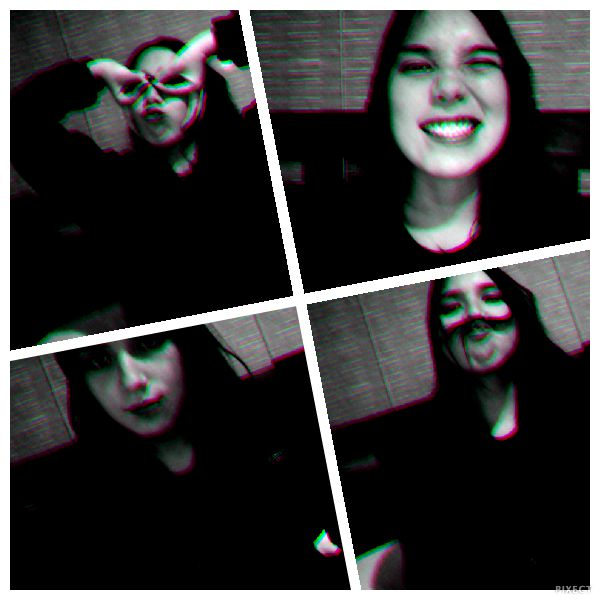

Aquí iré practicando lo que he aprendido en el curso de programación :)
¡Hola!
Hasta el momento sólo he visto un par de cosas de HTML, así que por ahora no hay colores ni animación (Boo!), pero se viene!
¿Qué he aprendido?
Crear branches y modificarlas desde la terminal
Moverme por mis documentos (en verdad ya sabía algo por el profe Borotto :3)
Usar los comandos correctamente
Y a hacer listas en las listas... ¿Cómo?
Decir si es una lista ordenada (ol) o desordenada (ul)
Enlistar todo entre "li" y "/li"
Cerrar la lista para que funcione
También aprendí a escribir "<", ">" y "&" para que el navegador no lo lea como un comando
Y no olvidar que las comillas se pueden hacer con comando para evitar que se desconfiguren en otros tipos de "codificadores"
Ah, también aprendí a hacer links :P

Esta soy yo hermoseando la página.
Sólo con propósitos de relleno escribiré este párrafo todo lo que hice hoy (o al menos lo que recuerdo). Primero me levanté como a las 11 y tomé yogurt con cereal (como siempre) y lavé la loza. Después de eso me fui a acostar otro rato, más tarde me levanté para almorzar y volví a dormí una siesta.
Ayer fui al Domino's pizza y junto con el pedido compré una bebida que no me la entregaron así que hoy me armé de fuerzas para ir a buscarla y cuando llegué allá me di cuenta que se me había quedado la boleta, pero el niño que me atendió me la pasó igual. Buen cabro. Después de eso aproveché de ir al lider e hice todas las compras necesarias para no salir de acá en mil años jaja y una de mis motivaciones para ir al super era que quería tomar un helado en el puesto de Mc-algo-helados que hay en el Lider, pero la niña que atendía me dijo que no tenían helado... Y entonces ¿Qué venden ahí? Bueno, como llevaba mucho tiempo sin tomar helado y anoche soñé que tomaba uno, me compré una cassata (sí, soy la Rosa, lo sé).
Cuando llegué al edificio tuve que usar un carrito porque las bolsas estaban muy pesadas. Una vez adentro del departamento ordené las cosas, me comí un trocito de kuchen que me dejó mi mamá hace unos días, me hice un sandwich y al fin tomé helado y tomé la famosa bebida de la discordia (Rosaagain). Más tarde de nuevo me dio hambre, pero ya era mucho así que me hice una ensalada y me puse a ver videos de gente fitness para ver si así dejaba de comer jajaja.
He visto muchas series, terminé la primera temporada de Shameless, la 4 de OITNB y ahora estoy terminando wilfred. Quiero que salga el nuevo capítulo de Mr Robot.
Ah, casi lo olvido! Siendo hoy 24 de julio de 2016, juro solemnemente que mañana empieza la dieta y el ejercicio porque ya está bueno ya de tanta mala vida.